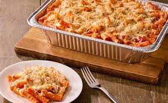

Baked Ziti
This is the best baked ziti recipe you’ve ever had! It takes a classic dish and kicks it up about ten more notches, A mixture of marinara and Alfredo sauce along with five additional cheeses make an over–the–top, flavorful pasta. And you don’t have to wait for a trip to Olive Garden to enjoy it!
Ingredients
Pasta
- 1 pound ziti pasta
- 4 cups marinara sauce
- 2 cups Alfredo sauce
- ½ cup ricotta cheese
- ½ cup fontina cheese, shredded
Topping
- 2 cups mozzarella cheese, shredded
- ½ cup panko breadcrumbs
- ¼ cup Romano cheese, grated
- ¼ cup Parmesan cheese, grated
- 2 cloves garlic, minced
Instructions
- Preheat the oven to 375°F.
- Cook the pasta on minute shy of the directions on the box and drain.
- In a large metal bowl add the pasta, marinara sauce, ricotta cheese, and fontina cheese and mix well.
- Add to a large oven safe skillet or 9×13–inch pan.
- Mix the mozzarella, panko, Romano, parmesan, and garlic together and add the topping over the pasta.
- Bake for 30–35 minutes uncoverd until golden brown and bubbly.